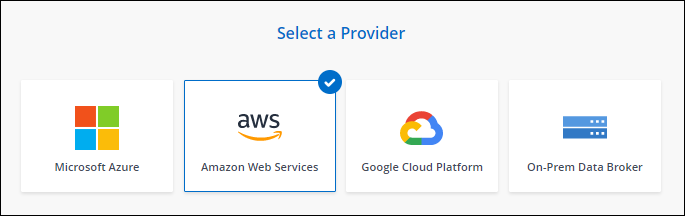
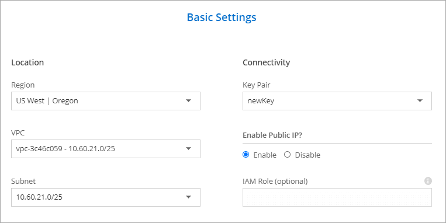
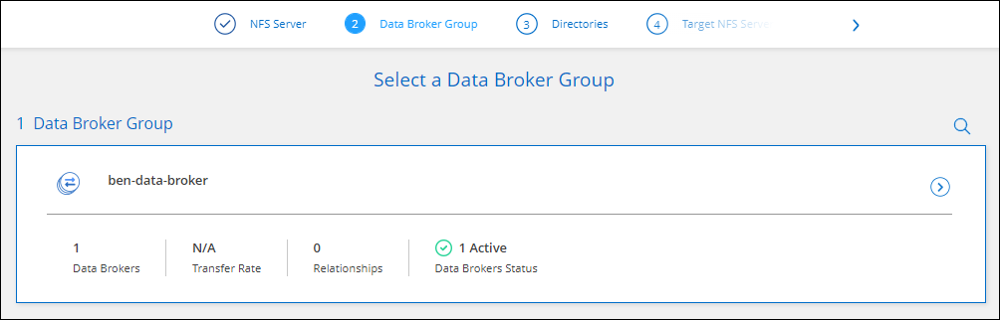

Dokumentationsänderungen beantragen
Dokumentationsänderungen beantragen In GitHub bearbeiten
In GitHub bearbeiten Leitfaden für Beitragende
Leitfaden für BeitragendeErstellen eines neuen Daten-Brokers in AWS
Beitragende
Wenn Sie eine neue Gruppe für den Datenvermittler erstellen, wählen Sie Amazon Web Services, um die Software für den Datenvermittler auf einer neuen EC2-Instanz in einer VPC zu implementieren. Cloud Sync führt Sie durch den Installationsprozess, aber die Anforderungen und Schritte werden auf dieser Seite wiederholt, um Sie bei der Vorbereitung auf die Installation zu unterstützen.
Sie haben auch die Möglichkeit, den Data Broker auf einem vorhandenen Linux-Host in der Cloud oder vor Ort zu installieren. "Weitere Informationen .".
Unterstützte AWS-Regionen
Alle Regionen werden mit Ausnahme der Regionen in China unterstützt.
Root-Berechtigungen
Die Software für den Datenvermittler wird automatisch als Root auf dem Linux-Host ausgeführt. Root-Vorgänge sind eine Anforderung für den Einsatz eines Daten-Brokers. Beispielsweise zum Mounten von Freigaben.
Netzwerkanforderungen
-
Der Daten-Broker benötigt eine ausgehende Internetverbindung, damit er den Cloud Sync Service für Aufgaben über Port 443 abfragen kann.
Wenn Cloud Sync den Datenbroker in AWS implementiert, wird eine Sicherheitsgruppe erstellt, die die erforderliche ausgehende Kommunikation ermöglicht. Beachten Sie, dass Sie den Data Broker so konfigurieren können, dass er während des Installationsvorgangs einen Proxyserver verwendet.
Wenn Sie die ausgehende Verbindung begrenzen müssen, lesen Sie "Die Liste der Endpunkte, die der Datenmanager kontaktiert".
-
NetApp empfiehlt die Konfiguration des Quell-, Ziel- und Daten-Brokers für die Verwendung eines NTP-Services (Network Time Protocol). Die Zeitdifferenz zwischen den drei Komponenten darf 5 Minuten nicht überschreiten.
Erforderliche Berechtigungen für die Bereitstellung des Data Brokers in AWS
Das AWS Benutzerkonto, das Sie für die Bereitstellung des Daten-Brokers verwenden, muss über die Berechtigungen in verfügen "Von NetApp bereitgestellt".
] Anforderungen, Ihre eigene IAM-Rolle mit dem AWS Daten-Broker zu nutzen
Wenn Cloud Sync den Data Broker bereitstellt, erstellt es eine IAM-Rolle für die Data Brokerinstanz. Sie können den Data Broker auf Wunsch mit Ihrer eigenen IAM-Rolle bereitstellen. Sie können diese Option verwenden, wenn Ihr Unternehmen über strenge Sicherheitsrichtlinien verfügt.
Die IAM-Rolle muss die folgenden Anforderungen erfüllen:
-
Der EC2-Dienst muss die IAM-Rolle als vertrauenswürdige Einheit übernehmen können.
-
"Die in dieser JSON-Datei definierten Berechtigungen" Muss mit der IAM-Rolle verbunden sein, damit der Daten-Broker ordnungsgemäß funktionieren kann.
Befolgen Sie die folgenden Schritte, um die IAM-Rolle beim Bereitstellen des Daten-Brokers anzugeben.
Erstellen des Daten-Brokers
Es gibt verschiedene Möglichkeiten, einen neuen Daten-Broker zu erstellen. In diesen Schritten wird beschrieben, wie ein Daten-Broker in AWS installiert wird, wenn eine Synchronisierungsbeziehung erstellt wird.
-
Klicken Sie Auf Neuen Sync Erstellen.
-
Wählen Sie auf der Seite Synchronisierungsbeziehung definieren eine Quelle und ein Ziel aus und klicken Sie auf Weiter.
Führen Sie die Schritte aus, bis Sie die Seite Data Broker Group öffnen.
-
Klicken Sie auf der Seite Data Broker Group auf Create Data Broker und wählen Sie dann Amazon Web Services aus.

-
Geben Sie einen Namen für den Daten-Broker ein und klicken Sie auf Weiter.
-
Geben Sie einen AWS-Zugriffsschlüssel ein, damit Cloud Sync in Ihrem Auftrag den Daten-Broker in AWS erstellen kann.
Die Tasten werden nicht gespeichert oder für andere Zwecke verwendet.
Falls Sie keine Zugriffsschlüssel angeben möchten, klicken Sie auf den Link unten auf der Seite, um stattdessen eine CloudFormation-Vorlage zu verwenden. Wenn Sie diese Option verwenden, müssen Sie keine Anmeldedaten angeben, da Sie sich direkt bei AWS anmelden.
das folgende Video zeigt, wie die Instanz des Datenmakers mithilfe einer CloudFormation-Vorlage gestartet wird:
-
Wenn Sie einen AWS-Zugriffsschlüssel eingegeben haben, wählen Sie einen Speicherort für die Instanz aus, wählen Sie ein Schlüsselpaar aus, wählen Sie aus, ob eine öffentliche IP-Adresse aktiviert werden soll, und wählen Sie dann eine vorhandene IAM-Rolle aus. Lassen Sie das Feld leer, sodass Cloud Sync die Rolle für Sie erstellt.
Wenn Sie Ihre eigene IAM-Rolle wählen, Sie müssen die erforderlichen Berechtigungen angeben.

-
Geben Sie eine Proxy-Konfiguration an, wenn ein Proxy für den Internetzugriff in der VPC erforderlich ist.
-
Klicken Sie nach Verfügbarkeit des Datenmakers in Cloud Sync auf Weiter.
Das folgende Bild zeigt eine erfolgreich implementierte Instanz in AWS:

-
Füllen Sie die Seiten im Assistenten aus, um die neue Synchronisierungsbeziehung zu erstellen.
Sie haben einen Daten-Broker in AWS implementiert und eine neue Synchronisierungsbeziehung erstellt. Sie können diese Data-Broker-Gruppe mit zusätzlichen Synchronisierungsbeziehungen verwenden.
Details zur Instanz des Datenmakers
Cloud Sync erstellt mithilfe der folgenden Konfiguration einen Daten-Broker in AWS.
- Instanztyp
-
M5n.xlarge, wenn verfügbar in der Region, sonst m5.xlarge
- VCPUs
-
4
- RAM
-
16 GB
- Betriebssystem
-
Amazon Linux 2
- Festplattengröße und -Typ
-
10-GB-GP2-SSD